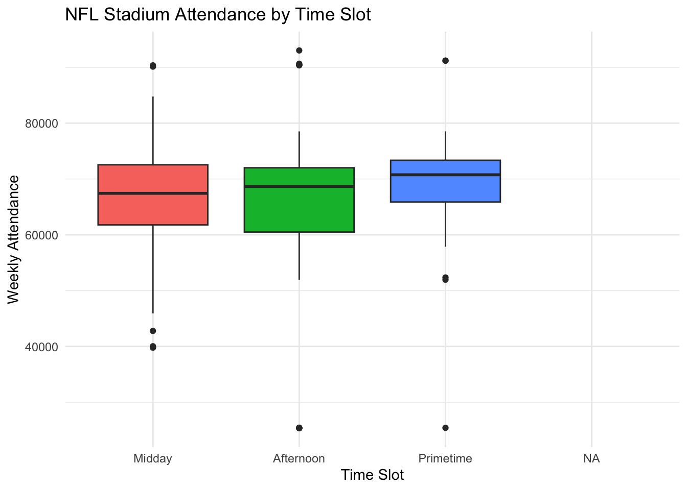

Primary Visualizations
Setting up the Data
library(tidyverse)attendance <- readr::read_csv('https://raw.githubusercontent.com/rfordatascience/tidytuesday/main/data/2020/2020-02-04/attendance.csv')
games <- readr::read_csv('https://raw.githubusercontent.com/rfordatascience/tidytuesday/main/data/2020/2020-02-04/games.csv')# Data Prep
games <- games |>
mutate(week = as.numeric(week))
nfl_data <- games |>
left_join(attendance, by = c("home_team_city" = "team",
"year" = "year",
"week" = "week")) |>
filter(year == 2019) |>
select(week, home_team, day, date, time, weekly_attendance) |>
mutate(
day = factor(day, levels = c("Mon", "Tue", "Wed", "Thu", "Fri", "Sat", "Sun")),
date = mdy(paste0(date, ", ", 2019)),
hour = hour(time),
time_slot = case_when(
hour <= 13.5 ~ "Midday",
hour <= 17 ~ "Afternoon",
hour >= 19 ~ "Primetime",
TRUE ~ NA_character_
)
) |>
filter(!is.na(time_slot)) |>
mutate(time_slot = factor(time_slot,
levels = c("Midday", "Afternoon", "Primetime")))Plot 1: Mean NFL Stadium Attendance by Week
nfl_data |>
group_by(week) |>
summarise(mean_attendance = mean(weekly_attendance, na.rm = TRUE)) |>
ggplot(aes(x = week, y = mean_attendance)) +
geom_segment(aes(x = week, xend = week, y = 0, yend = mean_attendance)) +
geom_point() +
labs(
title = "Mean NFL Stadium Attendance by Week",
x = "Week of Season",
y = "Average Attendance"
) +
theme_minimal()
From the lollipop plot, we can see that during the 2019 NFL season, average stadium attendance did not vary substantially from week to week. It is interesting that the lowest average attendance was in week 6 at around 64,000 attendees, while the highest average attendance was in week 7 at around 69,000 attendees. Both of these weeks occurred during mid-October, and there are no obvious external factors that immediately explain why these two week are the furthest apart.
One possible explanation for the increase in attendance from week 6 to week 7 is variation in game quality. Week 7 may have featured more high profile matchups, stronger teams playing each other, or important rivalry games that attracted larger crowds.
Overall, the plot suggests that average NFL stadium attendance remains relativelty stable throughout the season, with only small flucutations from week to week.
Plot 2: NFL Stadium Attendance by Time Slot
ggplot(nfl_data, aes(x = time_slot, y = weekly_attendance,
fill = time_slot)) +
geom_boxplot() +
labs(
title = "NFL Stadium Attendance by Time Slot",
x = "Time Slot",
y = "Weekly Attendance"
) +
theme_minimal() +
theme(legend.position = "none")
From the side-by-side boxplot, we can see that NFL stadium attendance was influenced by the game’s time slot during the 2019 season. The median attendance is higher for primetime games, which makes sense because the NFL typically schedules its most high profile matchups in the primetime slot. These games often feature stronger teams which are more likely to draw larger crowds. The midday time slot has the lowest median attendance. This also aligns with expectations, as lower profile games are generally scheudled during this window, which may lead to slightly smaller crowds.
Looking at the outliers and referencing the nfl_data dataframe, the high attendance outliers are primarily from the Dallas Cowboys as they have the largest stadium in the NFL by capacity. This naturally allows for higher attendance totals compared to other teams. On the lower end, the main outliers from the Los Angeles Chargers, who played their 2019 home games at a much smaller soccer stadium, as they were in the process of moving to a new permanent stadium. As a result, their attendance numbers were capped at a lower level than most other teams.
Overall, this plot suggests that kickoff time does have a noticeable relationship with attendance, with primetime games generally drawing the largest crowds.
Plot 3: NFL Stadium Attendance by Date, Day, and Time Slot
ggplot(nfl_data, aes(x = date, y = weekly_attendance, color = time_slot)) +
geom_point() +
facet_wrap(~day, ncol = 1) +
xlim(as.Date("2019-09-01"), as.Date("2020-01-05")) +
labs(
title = "NFL Stadium Attendance by Date, Day, and Time Slot",
x = "Date",
y = "Stadium Attendance",
color = "Time Slot"
)
This final plot examines how day of the week, time of day, and week within the season jointly relates to stadium attendance. Looking first at Monday games, all of them occur in the primetime slot. Attendance for these games generally falls between 60,000 and 80,00 attendees, reflecting the importance of Monday Night Football and the tendency to schedule high profile games during this time.
For Thursday games, most also take place during the primetime slot, with the exception of a few games in late November. These are the Thanksgiving Day games, which include an afternoon game. This games shows the highest attendance among Thursday games largely because it was hosted by the Dallas Cowboys, who have the largest stadium in the NFL, and it is a NFL tradition for the Cowboys to host a Thanksgiving game. There are also a small number of Saturday games, which tpyically occur late in the season once the college football regular season has finished. These games provide additional national viewing opportunities and tend to follow similar attendance patterns to Sunday games.
Sunday games make up the majority of the schedule and include games across all three time slots. Most Sunday games fall between 60,000 and 80,000 attendees, though there are some outliers due to differences in stadium capacity. Compared to weekday games, there are more games below 60,000 attendees largerly because many Sunday matchups are played in the midday and afternoon time slots, which tend to draw slightly smaller crowds on average.
Overall, across the full season, attendance appears relatively stable, with variations more strongly associated with time slot and stadium capacity than with the specific week of the season.